Access
Do key pages load, and do redirects lead to the intended destination?
Selected writing · Independent samples
These independent samples demonstrate how I approach technical writing, product documentation and SEO: clarify the user’s problem, explain the system state, show evidence-based checks, make next steps actionable and link to reliable sources.
Sample 01 · Technical SEO

Observe → record evidence → prioritize → verify
A useful SEO review begins by checking whether important pages can be found, understood and accessed—not by promising a ranking position. This first pass helps identify issues worth investigating before prioritizing fixes.
Choose a few key pages, such as the homepage, a service page and an important article. Open each URL and confirm it loads without an error or an unexpected redirect. Review the site's robots.txt file for crawl rules that could affect important paths. A robots rule controls crawling; it does not, by itself, guarantee that a URL will never appear in search results.
Inspect the page source or CMS settings for a noindex directive and review the canonical URL. A canonical is a signal about the preferred version of similar pages, not an unconditional command. If Search Console is available, use URL Inspection to see Google's reported information for the selected URL.
Check whether each important page has a distinct, descriptive title and a clear main heading. The title should summarize the page accurately. Avoid repeating keywords unnaturally or writing a title that promises something the page does not deliver.
Ask whether a visitor can reach important pages through meaningful links from relevant pages. Descriptive link text helps people understand where a link leads. Do not rely only on a sitemap: links also help visitors navigate and help crawlers discover pages.
If the site has an XML sitemap, confirm that it uses the preferred canonical URLs and is reachable. A sitemap can help discovery, but submission does not guarantee crawling or indexing. Check HTTPS, redirects and consistent preferred URLs so users and search engines are not sent through confusing variants.
Do key pages load, and do redirects lead to the intended destination?
Are robots rules, meta robots directives and canonical hints intentional?
Does each page have a specific purpose, descriptive title and useful main heading?
Can users follow internal links to important pages, and is the sitemap valid and accessible?
Record the URL, observed issue, evidence, likely impact and recommended next check. Separate confirmed problems from hypotheses.
Observation: State exactly what was checked and what happened.
Evidence: Record the URL, directive, response or tool output.
Why it matters: Explain the possible effect on users or discovery without overstating certainty.
Next step: Recommend a specific fix or further test, then verify it after implementation.
Scope note: This is a general checklist, not a diagnosis of a specific website. A real audit should inspect the actual site and available Search Console or analytics evidence before ranking issues by impact.
Sample 02 · Technical writing

Discovery, crawling, indexing and ranking are separate processes.
Publishing a webpage does not automatically mean it will appear in search results. Search engines generally need to discover a URL, access and process its content, decide whether and how to index it, and then determine whether it is relevant to a particular search.
Search engines discover URLs through links, sitemaps and other known sources. A crawler may request a page to retrieve its content. Crawl access can be affected by server errors, redirects, access restrictions and robots rules. Discovery and crawling are not guaranteed for every URL.
After fetching a page, a search engine can process its content and signals to decide whether to include it in its index. Duplicate or very similar pages may be grouped, and canonicalization signals can help identify a preferred URL. A page can be crawled without being indexed.
When someone searches, the engine selects and orders results using many signals related to the query, page content, quality and context. Being indexed does not guarantee that a page will rank prominently for a particular search—or appear for every query a site owner expects.
The important distinction is that crawling, indexing and ranking are different stages. Checking one stage does not prove that the others have happened. Good technical foundations make content easier to access and interpret, but they cannot guarantee a search position.
Sample 03 · Developer documentation

A good quickstart should help a developer reach one successful request quickly, understand what to replace, and know where to look when something fails. The example below demonstrates that structure for a fictional service that returns a project record.
curl, or an HTTP client of your choice.Use an environment variable or your platform's secret manager. Do not paste private tokens into public repositories, screenshots, browser code, or support tickets.
export EXAMPLE_API_TOKEN="replace-with-your-token"The fictional request below retrieves a project by ID. Replace the placeholder ID and token with values from your own test environment.
curl --request GET \
--url "https://api.example.com/v1/projects/project_123" \
--header "Authorization: Bearer $EXAMPLE_API_TOKEN" \
--header "Accept: application/json"Illustrative response:
{
"id": "project_123",
"name": "Website migration",
"status": "active"
}This JSON is an example of the shape a successful response might take. Actual fields, status codes, authentication rules and endpoint behavior must be confirmed against the real API specification.
Documentation principle: a quickstart is useful when a developer can identify prerequisites, copy a safe example, understand the expected result and troubleshoot the most likely failures without guessing.
Sample 04 · AI and software content

Retrieval supplies context; it does not guarantee a correct answer.
A language model can generate fluent text without having the specific information a user needs. Retrieval-augmented generation (RAG) is an approach that gives a model relevant material from an external knowledge source at answer time. The goal is to make answers more grounded in information the system can retrieve, rather than relying only on what the model learned during training.
RAG can make current or organization-specific information available to a model without retraining the model every time a document changes. It can also make answers easier to inspect when the system exposes the retrieved sources. However, retrieval may miss relevant material, return outdated passages or surface conflicting information. A model can still misinterpret retrieved text or produce claims the sources do not support.
Does the retrieved context actually contain the information needed to answer the question?
Can important claims in the response be traced to relevant source passages?
Are documents updated appropriately, and are user access rules respected during retrieval?
Are representative questions tested for relevance, factual support, refusal behavior and consistency—not just fluent wording?
Imagine an employee asking, “What is our current travel reimbursement limit?” A RAG system could retrieve the relevant section from the organization's current travel policy and use that passage to formulate an answer. A responsible implementation should identify the policy version or link to the source, distinguish missing information from a definite rule, and avoid guessing if retrieval returns no reliable evidence.
Takeaway: RAG is not a guarantee against hallucinations. It is a system design pattern whose value depends on source quality, retrieval, access control, prompt design and ongoing evaluation.
Sample 05 · Technical SEO and content strategy

Search intent shapes the brief; evidence shapes the finished content.
Working title: How to Choose an API Monitoring Tool: A Practical Evaluation Checklist
Primary reader: A developer, engineering lead or technical product manager comparing ways to monitor APIs.
Reader problem: The reader needs to understand which capabilities matter and how to compare tools against their own systems, team workflow and budget.
The likely intent is commercial investigation supported by informational research. The article should help readers define requirements and evaluate trade-offs—not pretend that one product is best for every team. Before publication, validate the target query, related questions and competitor coverage using current search data and the client's audience research.
Set a baseline before publication. Depending on the goal, review relevant search impressions and clicks, qualified organic visits, engagement with comparison sections, and meaningful actions such as demo requests. Compare performance over an appropriate period and account for other changes. Do not attribute a change to one article without evidence.
Editorial standard: a strong SEO article satisfies a real reader need first, supports claims with evidence, and uses technical optimization to improve discovery and usability—not to disguise thin or generic content.
Sample 07 · Product documentation · Payment troubleshooting

A checkout screen or screenshot alone is not proof of a completed payment.
You approved a payment in your wallet, but the checkout page still says Pending, or the recipient has not marked the payment as received. That does not automatically mean the payment failed—or that you should send it again.
The safest first step is to identify what happened to the original transaction. This guide shows you how to check its status, compare the payment details and give support the information needed to investigate.
A wallet prompt, a submitted transaction and a payment verified by a receiving service are different events. The exact labels vary by product, but a clear payment journey should distinguish these stages:
The checkout has requested an action, but you have not yet approved it in your wallet. Review the asset, amount, network and destination shown in the wallet before signing. If you did not approve the request, the payment has not been confirmed by that action.
Your wallet reports that it submitted the transaction. This indicates an attempt to send it to the network; it does not, by itself, prove that the receiving service has verified the required payment.
The payment service is still checking the transaction or waiting for the conditions it requires. Keep the transaction reference available and use the status shown by the checkout or the relevant network explorer. Do not assume that a pending status means success or failure.
The receiving service has confirmed that the transaction satisfies its configured payment rules. The exact criteria—such as network, token, destination, amount and confirmation threshold—are product-specific and should be stated in the service's own documentation.
The service has not accepted the payment as a completed match. Read the accompanying reason, if one is provided. A failed transaction, an expired checkout and a transaction that does not match the requested payment are different situations and may require different next steps.
Open the wallet or service you used and locate the original payment attempt. Collect the following information where available:
A transaction hash is useful for investigation, but it is not proof on its own that the correct asset, amount, network or destination was used.
What to do next: If the status remains unresolved beyond the service's published guidance, contact its official support channel with the transaction hash and checkout reference. Do not rely on a guessed universal waiting time.
What to do next: Share the exact wallet status and network with the payment service. Do not describe the payment as confirmed unless the relevant evidence supports that conclusion.
A failed or reverted transaction is not the same as a pending transaction. Review the explorer's available details and your wallet's explanation. Depending on the network and action, possible causes can include insufficient network fees, contract execution conditions or a rejected request.
What to do next: If the failure reason is unclear, contact the wallet or service through its official support channel. Include the failure message rather than guessing at the cause.
A successful on-chain transaction and a payment accepted by a checkout service are related but not identical. The service may apply its own matching and confirmation rules before changing the order status.
What to do next: If the transaction appears successful and the details seem to match, send the transaction hash and checkout reference to official support for a review. Do not send additional funds to “unlock” or “release” a payment unless the service's verified instructions explicitly explain a legitimate requirement.
A transaction can exist on a blockchain and still fail a service's payment rules. Compare each field against the original payment instructions:
What to do next: Record the actual transaction details and the original requested details separately. Contact the service to ask whether the payment can be reviewed. Recovery is not guaranteed; it depends on the asset, network, destination and service capabilities. Never assume that sending a second payment will correct the first one.
| What you see | What it tells you | Next step |
|---|---|---|
| Wallet approval not completed | No completed approval is evidenced | Review the request and wallet status |
| Submitted; explorer pending | The network outcome is unresolved | Track the original hash; avoid duplicate payment |
| Explorer cannot find hash | The lookup is inconclusive | Check hash and network; inspect wallet status |
| Explorer reports failed | The transaction did not succeed as reported | Review failure details before retrying |
| Explorer reports success; checkout pending | On-chain success has not yet become a verified checkout state | Compare payment rules and contact support |
| Asset, amount, network or destination mismatch | The transaction may not satisfy the requested payment | Preserve both sets of details; request a review |
A concise, evidence-based report helps support investigate without asking you to repeat the payment. You can use this template:
There is no single confirmation time or threshold that applies to every blockchain and payment service. A product's exact meaning of “received,” its supported assets, its matching logic and its recovery process must be documented from verified product behaviour. If the interface cannot establish a state, the copy should say that the status is still being checked—not imply success.
Documentation principle: good troubleshooting content does more than list possible errors. It helps the reader identify the current state, gather the right evidence, avoid risky duplicate actions and choose a next step that is supported by what the system actually knows.
Sample 08 · AI product documentation · Agent workflows

Define boundaries, make states observable and evaluate outcomes.
An AI agent is more than a chat interface. Depending on its design, it may interpret a request, retrieve information, call tools, update records or coordinate a multi-step workflow. Users need to understand not only what the agent can do, but also what it cannot do, when it asks for approval and how to recover when a task is interrupted.
Start with a bounded job statement. Avoid broad promises such as “handles your operations automatically.” Describe the supported task, the systems involved, the expected input and the outcome the user can verify.
What specific user problem does the agent solve? Which tasks are explicitly outside its scope?
What information does it need, which formats are supported, and what should a user do when required information is missing?
Which systems can it read or change? Are permissions limited to the minimum needed for the task?
Which actions can run automatically, which require confirmation, and which must always be performed by an authorized person?
A reliable guide should let a user tell what the agent is doing and what evidence supports the result. A generic workflow might look like this:
Important: “The agent said it completed the task” is not sufficient evidence that an external system changed. Where possible, show the authoritative record, transaction reference or tool result that confirms the action.
Use state labels that describe what the system knows, not what the user hopes happened. The following examples are illustrative and should be aligned with actual backend events.
| User-facing state | Meaning | Useful next step |
|---|---|---|
| Needs more information | A required input is missing or ambiguous. | Identify the missing field and give an example. |
| Preparing action | The agent is assembling a proposed action; no external change is confirmed. | Show the intended action and affected record. |
| Awaiting approval | A person must authorize the action. | Explain the consequence before confirmation. |
| Action outcome unknown | A timeout or interrupted response means the system cannot safely infer whether the action completed. | Check the authoritative system before retrying. |
| Completed | The connected system returned evidence that the action succeeded. | Show the resulting record or reference. |
| Could not complete | The action was rejected or failed as reported by the connected system. | Give the known reason and a safe recovery path. |
Testing should cover more than whether the agent produces a fluent answer. Use representative tasks and score the parts of the workflow that matter.
Maintain a test set with the user request, expected behaviour, observed output, tool calls, evidence and pass/fail rationale. Include negative tests: unauthorized access, ambiguous instructions, malicious content in retrieved material and attempts to make the agent exceed its permissions.
“Human in the loop” is not a sufficient control description by itself. State who approves, what information they see, what they are authorizing, whether they can cancel, and how the decision is recorded. Provide an escalation route for high-impact or uncertain cases.
Documentation principle: good AI agent documentation sets accurate expectations, makes system states observable, explains human control and gives teams a repeatable way to test whether the agent behaves safely and usefully.
Sample 09 · Developer documentation · MCP integration

An AI application becomes more useful when it can work with approved external tools and data sources. The Model Context Protocol (MCP) provides a standardized way for an MCP host to communicate with MCP servers that expose capabilities such as tools, resources and prompts.
The model does not automatically gain unrestricted access to every connected system. The host, server, authorization layer and user-consent design determine what can be accessed and which actions are permitted.
Before connecting a server, document the operational requirements:
Do not approve a server simply because its name or description sounds familiar. Review the tools it exposes, their descriptions, input schemas, output schemas and side effects. Identify whether a tool reads data, changes data, sends messages, spends money or performs another consequential operation.
create_support_ticketFor remote MCP servers that protect user-specific information or actions, use the authorization flow required by the relevant MCP specification and a compatible identity provider. Follow the current OAuth security requirements rather than copying an outdated example.
| Symptom | Possible area to inspect | Safe next check |
|---|---|---|
| Server cannot be reached | Server process, endpoint, network or transport configuration | Verify the configured endpoint and server health; avoid exposing secrets in logs. |
| Authentication rejected | Expired token, incorrect audience, scope or authorization configuration | Inspect the documented auth flow and server-side validation result. |
| Tool is unavailable | Capability discovery, server version or permission policy | Refresh the capability list and confirm the user is authorized. |
| Input validation fails | Required fields, data types, enum values or schema mismatch | Compare the actual request with the server's current input schema. |
| Tool times out after a write request | The action may have completed even though the response was lost. | Check the authoritative system before retrying; use idempotency controls where supported. |
Tool output, retrieved documents and server-provided descriptions should be treated as data, not as instructions that override the application's trusted policy. Review tool definitions when they change, restrict network access, validate inputs and outputs, and consider the impact of a malicious or compromised server.
Pay particular attention to prompt injection, excessive tool permissions, token leakage, confused-deputy scenarios, server-side request forgery and unauthorized access to another user's state. A model's ability to interpret natural language does not replace normal security controls.
Documentation principle: a useful integration guide helps developers connect the right components, understand the permissions being granted, diagnose common failures and verify that the integration behaves as intended.
Sample 10 · AI security · Governance and risk communication

An AI feature can produce useful answers and still create unacceptable risk if it exposes private information, follows malicious instructions, takes actions beyond a user's authority or cannot explain what happened after an incident. A production review should examine the complete product workflow—not only the model's responses.
List the information that enters, moves through and leaves the feature. Include user prompts, uploaded files, retrieved documents, tool inputs and outputs, logs, analytics events and support records.
Do not promise that data is never stored, used for training or shared with a provider unless the applicable product configuration, contract and current policy have been verified.
Every connected tool increases the number of ways the AI feature can affect other systems. Apply least privilege and enforce authorization in the system that performs the action—not only in the model prompt.
Traditional application security testing remains necessary, but AI features introduce additional risks. The following are practical test prompts and review questions—not proof that a system is vulnerable.
Can malicious instructions inside a document, webpage or tool result persuade the model to ignore trusted instructions or disclose information? Test direct and indirect inputs using controlled, non-sensitive data.
Can a user obtain another user's records, secrets, internal prompts or restricted documents? Test access boundaries with separate test identities and data.
Can the model invoke a destructive or high-impact tool without the required authorization, confirmation or business rule?
Are model-generated strings safely validated and encoded before they reach SQL, shell commands, HTML, workflows or other interpreters?
Are models, plugins, MCP servers, datasets and third-party packages reviewed, versioned and monitored for unexpected changes?
Can repeated or oversized requests exhaust model budgets, tool quotas, queues or service capacity? Are limits and alerts defined?
Assign an owner for each material risk and specify which decisions remain with a person. Human review should be meaningful: the reviewer needs enough context to understand the proposed action, its consequences and the evidence behind it.
| Decision type | Example control |
|---|---|
| Low-impact information retrieval | Show sources and allow users to inspect the retrieved record. |
| External communication | Preview the message and confirm recipient and content before sending. |
| Financial or account change | Require an authorized person and enforce business rules in the backend. |
| High-impact or uncertain decision | Escalate to a qualified human reviewer; do not let the model silently make the final determination. |
Define what happens when the AI feature behaves unexpectedly. The response plan should identify the incident owner, escalation route, evidence to preserve, affected users and systems, containment steps, communications process and criteria for restoring service.
For each identified risk, record the system component, scenario, evidence, likelihood, impact, existing control, owner, mitigation and residual risk. Do not mark a risk “resolved” merely because a policy statement or prompt was added; verify the control through testing.
Documentation principle: responsible AI product documentation should make data use, permissions, limitations, oversight and incident handling understandable to the people who build, operate and rely on the system. It should describe controls that exist and have been checked—not controls the team merely intends to add.